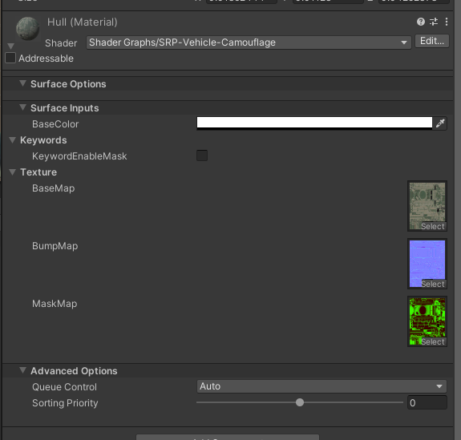
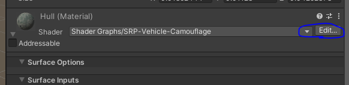
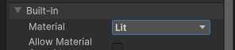
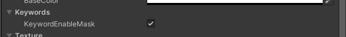
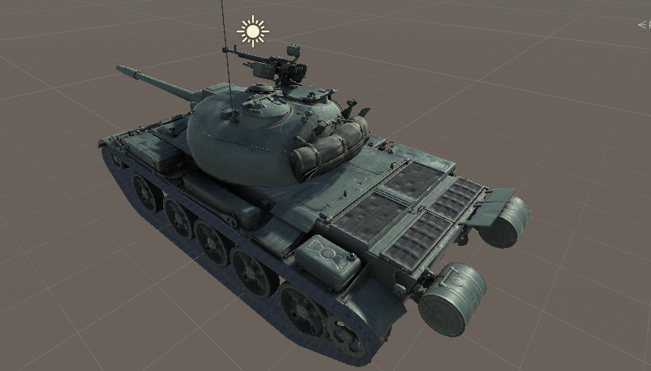

17-5. Mask 贴图编辑器内预览
Unity 中使用贴图
使用此 Shader Shader Graphs/SRP-Vehicle-Camouflage  在编辑器内预览 PBR 效果： 编辑 Shader 点击 Edit  从 Unlit 改为 Lit  然后点击 Save，Shader 会重新编译。 材质球勾选 Enable Mask 的选项。  在预览完毕后，务必把 Material 改回 unlit。 否则会导致打包大小变大
预览效果

注意事项
在预览完毕后，务必把 Material 改回 unlit。 否则会导致打包大小变大。 在决定版运行时，会自动识别 Mask 贴图，并使用 PBR 的材质球。